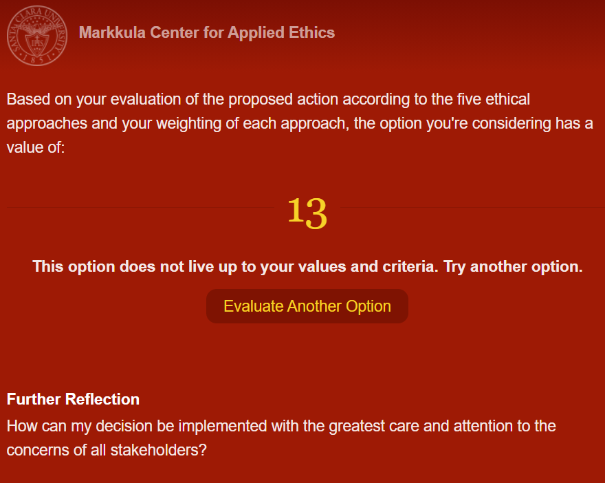

Análisis Malas Prácticas Profesionales sobre IME
Artículo por Rodolfo López GressLa ingeniería mecánica consta en el diseño y funcionamiento de sistemas mecánicos y eléctricos, generando reportes técnicos, validando resultados a partir de simulaciones y/o prototipos, con la finalidad de presentar un sistema eficiente que cumpla con las normas y especificaciones de calidad.
Si bien la parte de diseño e implementación de un sistema es importante, un ingeniero mecánico eléctrico debe tener la capacidad de tomar decisiones respecto al despacho de la red eléctrica, siendo un tema importante hoy en día, debido al uso de energías renovables para la generación eléctrica en un país.
A partir de lo anterior se utilizó PLUS Ethical Decision Making Model para analizar las malas prácticas tomadas por parte de la industria del sector energético de México, con enfoque en la reforma energética:
La implementación de una nueva Reforma Energética, en el sexenio actual tiene como objetivo la privatización del gas natural, impidiendo la comercialización por parte de una empresa privada, siendo el gobierno el único responsable de la venta, además se considera darle un poder mayor a la Comisión Federal de Electricidad (CFE), siendo el principal en la generación y distribución de la energía, quedando fuera plantas generadoras que utilizan energías renovables, encendiendo generadores de ciclos combinados, nucleares, etc., que utilizan otros hidrocarburos que afectan el medio ambiente. Además se tiene en proyecto la eliminación de la Comisión Reguladora de Hidrocarburos (CRE) y la Comisión Nacional de Hidrocarburos (CNH), dejando al gobierno con mayor autorización en la modificación de tarifas en los hidrocarburos, eliminando una costo ético o justo. Como ingeniero la CFE y PEMEX no cuentan con un diseño estructural para el despacho eléctrico, perjudicando también la prohibición y cancelación de contratos con empresas privadas para la generación y distribución de energía eléctrica. Finalmente se elimina la competencia, la mejora regulatoria, se elimina la necesidad de diseños ingenieriles para una optimización y resultados más óptimos, debido a un control monopolista.
Utilizando la aplicación de la Universidad de Santa Clara, se encontró lo siguiente:
- Utilidad: La CFE y PEMEX son los beneficiarios al crear un monopolio.
- Derechos: Se ignoran los derechos de las empresas privadas.
- Justicia: No existiría una regulación en los precios y un esquema tarifario que se puede manipular fácilmente.
- Bien común: Se ignoran las energías renovables, la inversión en el país y la competencia, dando beneficio a las empresas públicas.
- Virtud: Se evade la ética profesional, no existen regulaciones y se obstaculiza el crecimiento y mejoramiento del medio ambiente.
*Nota: Todos los criterios tienen la misma ponderación de importancia.
Este caso es de especial relevancia para el bienestar de la población mexicana como para las metas medioambientales internacionales de las que México es parte. Por una parte, eliminar al regulador del sistema eléctrico nacional (CENACE) cierra la participación ciudadana al limitar el acceso a la información sobre los criterios de despacho de la energía, propiciando la proliferación de prácticas de corrupción y nepotismo por parte de CFE. Además, al dar una preferencia de fuentes de energía de alta intensidad de carbón, se afecta la salud humana que repercute en una gran cantidad de personas por la naturaleza transfronteriza de la contaminación antropogénica. La reforma propuesta pone en juego la solidez de las empresas que ya operan en el mercado eléctrico mayorista, que hicieron una inversión económica importante considerando unas “reglas de juego” claras y establecidas. Por estas razones, la reforma propuesta atenta contra los principios de justicia, virtud, y bien común, lo cual puede ser observado en su calificación reprobatoria.
Referencias:
- Factor Energético. (2021). Reforma energética 2021. Recuperado de Reforma energética 2021: 16 razones para no aprobarla - Factor energético
- Solís, A. (2016). 3 Riesgos de corrupción en el sector energético de México. Forbes. Recuperado de 3 riesgos de corrupción en el sector energético de México